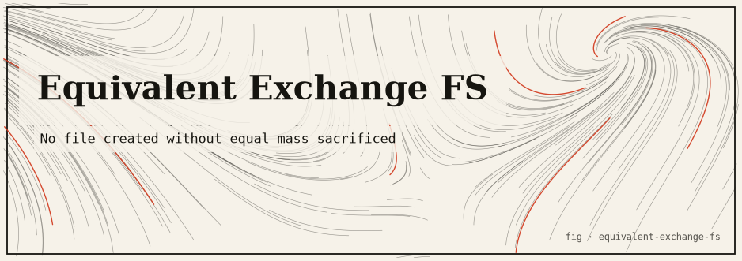

Conservation Laws as a Filesystem Invariant (Equivalent Exchange)
A filesystem enforcing the Law of Equivalent Exchange: to obtain, something of equal value must be lost. Write N bytes → delete N bytes. Conservation invariant verified by tests. Rust.

The idea
In Fullmetal Alchemist, the Law of Equivalent Exchange governs alchemy: to obtain something, something of equal value must be sacrificed. That is a fiction — but it is almost word-for-word the definition of a conservation law, one of the most useful ideas in computer science. This package turns the anime’s law into a working filesystem where a single quantity, the total number of bytes stored, can never change. To write N bytes of new data, you must simultaneously sacrifice N bytes of existing data.
The filesystem is fully in-memory; no real disk I/O occurs. The conservation rule is checked on every mutation and enforced by the type system where possible, so an operation that would break the balance is rejected rather than half-applied. Tests verify that no sequence of operations can change the total byte count.
Honest caveat: the alchemy framing is a metaphor, and a byte count is not literally a physical conserved quantity — the conservation here is a rule the code chooses to enforce, not a law of nature. It is also an in-memory model, not a production filesystem; real filesystems intentionally let total usage grow and shrink.
Invariants and conservation, explained
An invariant is a property that must hold true for a data structure to be considered valid — before an operation starts and after it finishes. Good systems are built around invariants because they turn “don’t corrupt the data” into a concrete, checkable condition. A conserved quantity is a particularly strict kind of invariant: not merely “valid” but “unchanged.” Here the conserved quantity is the total byte count, and the invariant is simply that it equals the sum of the sizes of all stored files at all times.
The classic real-world analogue is double-entry accounting. Every debit must be matched by an equal credit, so the books always balance; you cannot create money out of nowhere, only move it. This filesystem is a ledger for bytes: every gain (a write) must be paired with an equal loss (a sacrifice), so the sum is preserved. The same discipline shows up in physics conservation laws, in reference counting, and in any system where a total must stay fixed.
Crucially, a write-plus-sacrifice has to be transactional — the pair either both happens or neither does. If the write landed but the sacrifice did not, the total would drift and the invariant would break. Treating the pair as one atomic operation, checked before it commits, is what keeps the conserved quantity exact rather than approximately-right-most-of-the-time.
The mathematics
State: S = (files, total_bytes)
Invariant: total_bytes = Σ |content(f)| for all f ∈ files
total_bytes is constant (never changes after initialisation)
Operations:
write(path, data): must specify sacrifice(path', n) where n = |data|
→ adds |data| bytes, removes n bytes from sacrifice target
→ total_bytes unchanged
read(path): no cost
delete(path): returns bytes to a "void pool" — not writeable
void_exchange(n): writes n bytes from void pool (sacrifices void capacity)
How this project demonstrates it
- State is a pair
(files, total_bytes), and the invarianttotal_bytes = Σ |content(f)|is asserted after every mutation. write(path, data)requires a matchingsacrifice(path', n)withn = |data|: it adds the new bytes and removes an equal number from the sacrifice target, so the total is unchanged — the balanced-ledger rule in code.- A write with no valid sacrifice is rejected outright rather than partially applied, demonstrating the transactional, check-before-commit discipline.
deletereturns bytes to a non-writeable “void pool,” andvoid_exchange(n)can only mint new bytes by spending equal void capacity, so even reclaiming space obeys conservation.- Tests exhaustively confirm the invariant holds: no sequence of operations can move the total byte count off its initial value.
Equivalent Exchange filesystem questions
What is an invariant in software?
An invariant is a condition that must always hold for a data structure to be valid — before and after every operation on it. Here the invariant is that the total number of bytes stored never changes, so any operation that would break it is rejected.
How is this like double-entry accounting?
Double-entry bookkeeping requires every debit to be matched by an equal credit, so the books always balance. This filesystem applies the same rule to bytes: every gain (a write of N bytes) must be paired with an equal loss (a sacrifice of N bytes), so the total is conserved — Equivalent Exchange as a balanced ledger.
Why enforce conservation transactionally?
Because a write-plus-sacrifice must either both happen or neither happen. If only half completed, the total byte count would drift and the invariant would break. Treating the pair as one atomic transaction that is checked before it commits keeps the conserved quantity exact after every operation.
Run it
git clone https://github.com/caelum0x/awesome-mad-projects.git
cd equivalent-exchange-fs
cargo test
cargo run
# FS capacity: 1024 bytes
# write("a.txt", 200 bytes, sacrifice="b.txt") → OK
# total_bytes: 1024 ✓ (invariant holds)
# write("c.txt", 300 bytes) → ERROR: no sacrifice specified